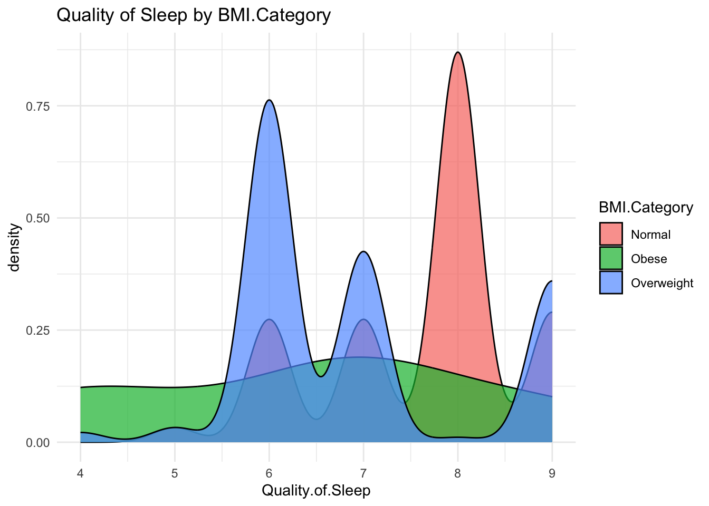
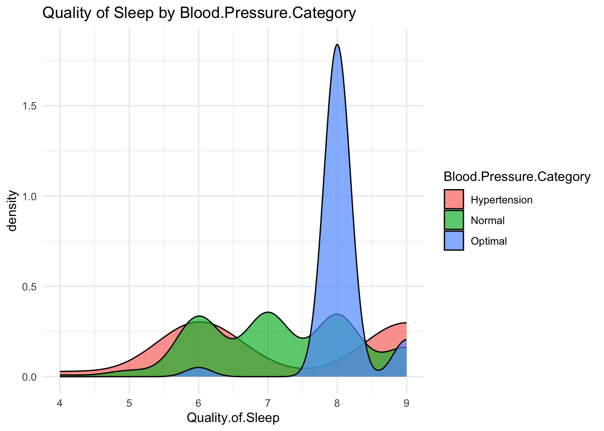
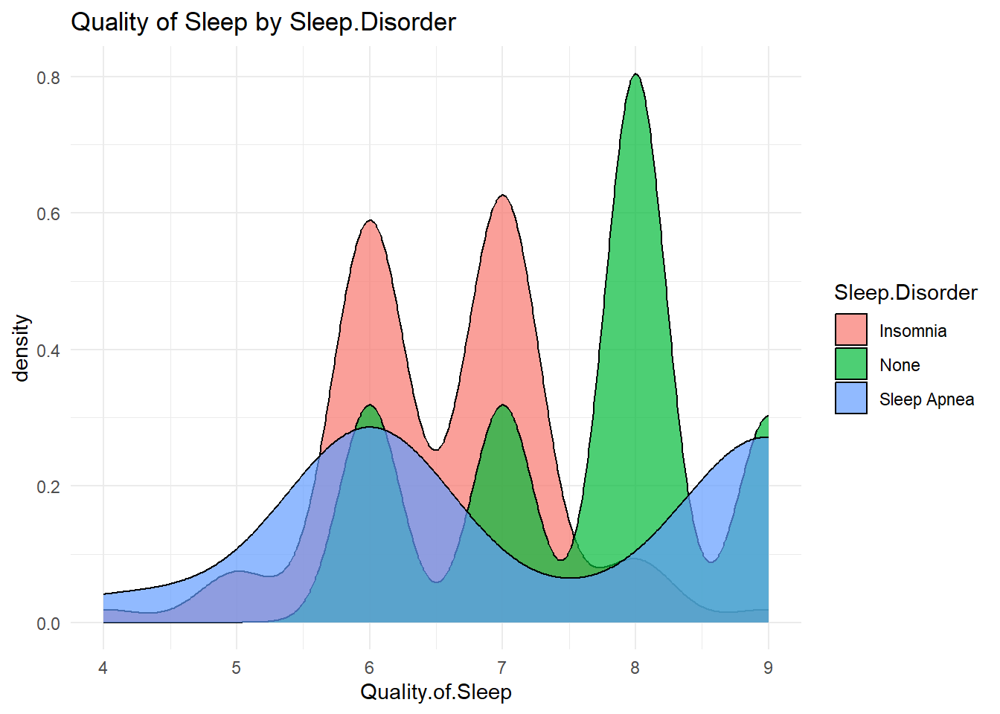
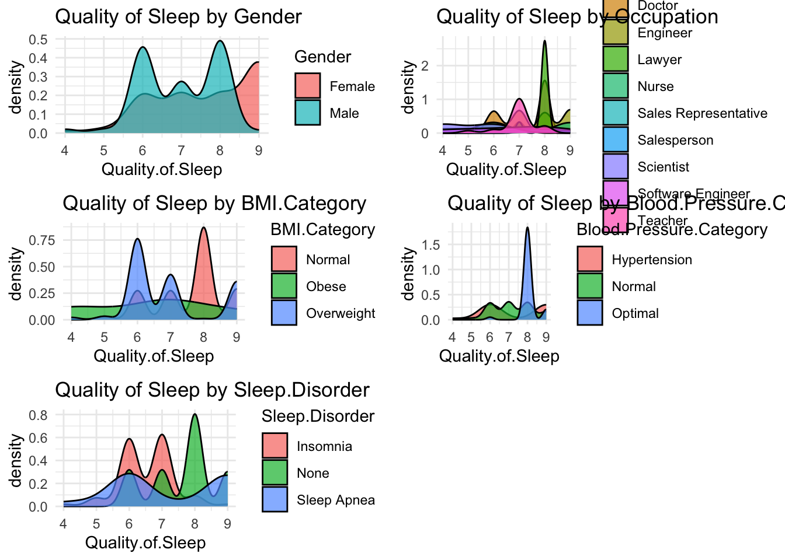
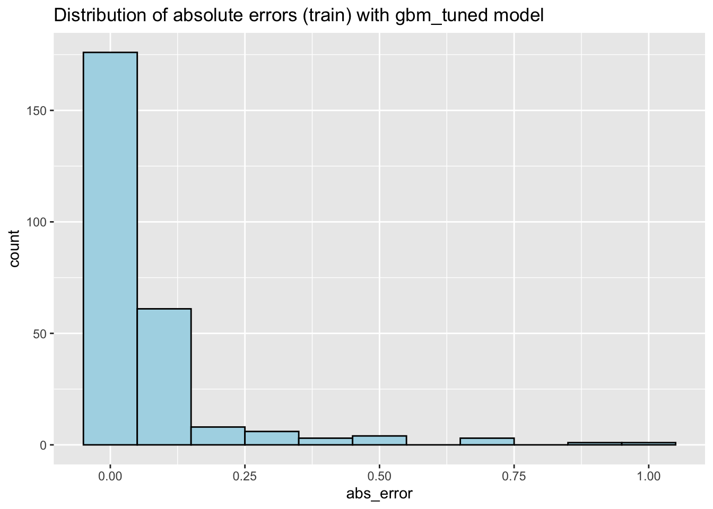
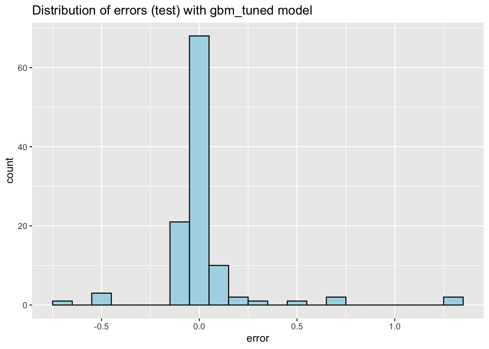
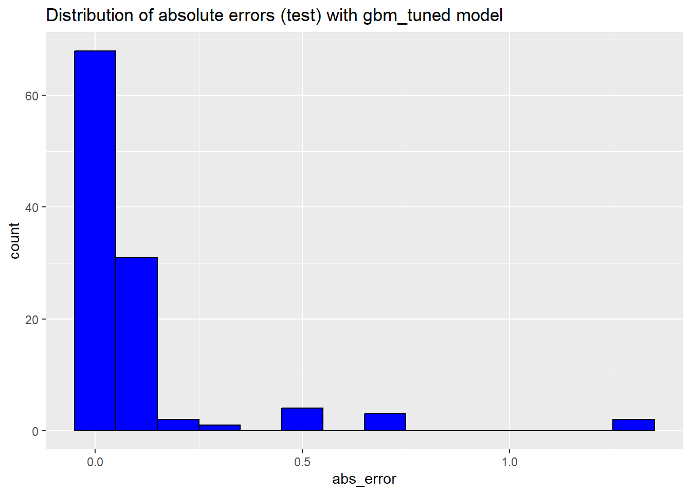

This project serves as the final assignment for the Reproducible Research course. It utilizes a dataset sourced from Kaggle and involves translating the code from Python to R. The aim of this project is to analyze the sleep health of individuals based on their respective lifestyles, incorporating machine learning techniques to enhance the analysis. Variables in this project include:
Gender
Age
Occupation
Sleep Duration
Quality of Sleep
Physical Activity Level
Stress Level
BMI Category
Blood Pressure
Heart Rate
Daily Steps
Sleep Disorder
Introduction
Sleep disorders (or sleep-wake disorders) are difficulties with the quality, timing, and quantity of sleep that cause daily discomfort and impairment in functioning. Sleep-wake disturbances are frequently associated with physical or mental health illnesses such as depression, anxiety, or cognitive difficulties. There are various forms of sleep-wake disorders, with insomnia being the most frequent. Other sleep-wake problems include sleep apnea. Insomnia is a common sleep problem that makes it difficult to get asleep and remain asleep. Meanwhile, sleep apnea is a condition in which you stop breathing while asleep.
Library
# Libraries usedlibrary(dplyr)
Attaching package: 'dplyr'
The following objects are masked from 'package:stats':
filter, lag
The following objects are masked from 'package:base':
intersect, setdiff, setequal, union
library(tidyr)library(ggplot2)library(patchwork)
Warning: package 'patchwork' was built under R version 4.3.3
library(corrplot)
corrplot 0.92 loaded
library(ggExtra)
Warning: package 'ggExtra' was built under R version 4.3.3
library(gbm)
Warning: package 'gbm' was built under R version 4.3.3
Loaded gbm 2.1.9
This version of gbm is no longer under development. Consider transitioning to gbm3, https://github.com/gbm-developers/gbm3
library(caret)
Warning: package 'caret' was built under R version 4.3.3
Loading required package: lattice
library(caTools)
Warning: package 'caTools' was built under R version 4.3.3
library(stats) library(GGally)
Warning: package 'GGally' was built under R version 4.3.3
Registered S3 method overwritten by 'GGally':
method from
+.gg ggplot2
library(neuralnet)
Warning: package 'neuralnet' was built under R version 4.3.3
Attaching package: 'neuralnet'
The following object is masked from 'package:dplyr':
compute
library(Metrics)
Warning: package 'Metrics' was built under R version 4.3.3
Attaching package: 'Metrics'
The following objects are masked from 'package:caret':
precision, recall
Data
# Read the datadata <-read.csv('Sleep_health_and_lifestyle_dataset.csv')
Reading a dataset in R
Data Cleaning
# Drop NA data <-na.omit(data)# Standardize "Normal Weight" and "normal" to "Normal" in "BMI Category"data <- data %>%mutate(BMI.Category =ifelse(BMI.Category %in%c("Normal Weight", "normal"), "Normal", BMI.Category))# Cleaned datahead(data)
Delete NA data, then standardize the BMI category column
# Split the Blood.Pressure column into two new columns and convert to numericdata <- data %>%separate(col = Blood.Pressure, into =c("Systolic Pressure", "Diastolic Pressure"), sep ="/", convert =TRUE) %>%mutate(`Systolic Pressure`=as.numeric(`Systolic Pressure`),`Diastolic Pressure`=as.numeric(`Diastolic Pressure`))str(data)
Person.ID Gender Age Occupation
Min. : 1.00 Length:374 Min. :27.00 Length:374
1st Qu.: 94.25 Class :character 1st Qu.:35.25 Class :character
Median :187.50 Mode :character Median :43.00 Mode :character
Mean :187.50 Mean :42.18
3rd Qu.:280.75 3rd Qu.:50.00
Max. :374.00 Max. :59.00
Sleep.Duration Quality.of.Sleep Physical.Activity.Level Stress.Level
Min. :5.800 Min. :4.000 Min. :30.00 Min. :3.000
1st Qu.:6.400 1st Qu.:6.000 1st Qu.:45.00 1st Qu.:4.000
Median :7.200 Median :7.000 Median :60.00 Median :5.000
Mean :7.132 Mean :7.313 Mean :59.17 Mean :5.385
3rd Qu.:7.800 3rd Qu.:8.000 3rd Qu.:75.00 3rd Qu.:7.000
Max. :8.500 Max. :9.000 Max. :90.00 Max. :8.000
BMI.Category Systolic Pressure Diastolic Pressure Heart.Rate
Length:374 Min. :115.0 Min. :75.00 Min. :65.00
Class :character 1st Qu.:125.0 1st Qu.:80.00 1st Qu.:68.00
Mode :character Median :130.0 Median :85.00 Median :70.00
Mean :128.6 Mean :84.65 Mean :70.17
3rd Qu.:135.0 3rd Qu.:90.00 3rd Qu.:72.00
Max. :142.0 Max. :95.00 Max. :86.00
Daily.Steps Sleep.Disorder
Min. : 3000 Length:374
1st Qu.: 5600 Class :character
Median : 7000 Mode :character
Mean : 6817
3rd Qu.: 8000
Max. :10000
Splitting the Blood.Pressure Column and Converting to Numeric and viewing Summary Data Statistics
# A tibble: 6 × 15
# Rowwise:
Person.ID Gender Age Occupation Sleep.Duration Quality.of.Sleep
<int> <chr> <int> <chr> <dbl> <int>
1 1 Male 27 Software Engineer 6.1 6
2 2 Male 28 Doctor 6.2 6
3 3 Male 28 Doctor 6.2 6
4 4 Male 28 Sales Representative 5.9 4
5 5 Male 28 Sales Representative 5.9 4
6 6 Male 28 Software Engineer 5.9 4
# ℹ 9 more variables: Physical.Activity.Level <int>, Stress.Level <int>,
# BMI.Category <chr>, `Systolic Pressure` <dbl>, `Diastolic Pressure` <dbl>,
# Heart.Rate <int>, Daily.Steps <int>, Sleep.Disorder <chr>,
# Blood.Pressure.Category <chr>
Defining Functions. According to the Italian Ministry of Health, Blood Pressure values can be classified based on ‘Systolic’ and ‘Diastolic’ values. Based on previous research, we can identify three possible categories above.
Data Visualization
age_groups <- data %>%mutate(Age.Group =case_when( Age <=35~"35 and below", Age >35~"35 and above" ))ggplot(age_groups, aes(x = Age.Group, y = Sleep.Duration, fill = Age.Group)) +geom_bar(stat ="summary", fun ="mean") +labs(title ="Mean Sleep Duration by Age Group", x ="Age Group", y ="Mean Sleep Duration (hours)") +theme_minimal()
ggplot(age_groups, aes(x = Age.Group, y = Quality.of.Sleep, fill = Age.Group)) +geom_bar(stat ="summary", fun ="mean") +labs(title ="Mean Quality of Sleep by Age Group", x ="Age Group", y ="Mean Quality of Sleep") +theme_minimal()
ggplot(age_groups, aes(x = Age.Group, y = Physical.Activity.Level, fill = Age.Group)) +geom_bar(stat ="summary", fun ="mean") +labs(title ="Mean Physical Activity Level by Age Group", x ="Age Group", y ="Mean Physical Activity Level") +theme_minimal()
ggplot(age_groups, aes(x = Age.Group, y = Stress.Level, fill = Age.Group)) +geom_bar(stat ="summary", fun ="mean") +labs(title ="Mean Stress Level by Age Group", x ="Age Group", y ="Mean Stress Level") +theme_minimal()
Categorizing age into two groups, over 35 and under 35. On average, those over 35 have higher sleep duration, sleep quality and physical activity. However, those under 35 years of age have higher levels of stress than those over 35 years of age.
ggplot(data, aes(x = Stress.Level)) +geom_density(fill ="lightblue", alpha =0.5) +labs(title ="Density Plot of Stress Level", x ="Stress Level", y ="Density") +theme_minimal()
ggplot(data, aes(x = Physical.Activity.Level)) +geom_density(fill ="lightblue", alpha =0.5) +labs(title ="Density Plot of Stress Level", x ="Stress Level", y ="Density") +theme_minimal()
ggplot(data, aes(x = Sleep.Duration)) +geom_density(fill ="lightblue", alpha =0.5) +labs(title ="Density Plot of Stress Level", x ="Stress Level", y ="Density") +theme_minimal()
The stress level has a different distribution in each plot. In the first plot, the stress level is 4 and the other is around stress level 6. In the second, the plot tends to fluctuate. Meanwhile, in the third plot, the levels tend to be close, namely around stress levels 6 and 7.
# Calculate mean, median, and modemean_sleep <-mean(data$Quality.of.Sleep, na.rm =TRUE)median_sleep <-median(data$Quality.of.Sleep, na.rm =TRUE)mode_sleep <-as.numeric(names(sort(table(data$Quality.of.Sleep), decreasing =TRUE)[1]))# Create the histogram and add lines for mean, median, and modequality_of_sleep_plot <-ggplot(data, aes(x = Quality.of.Sleep)) +geom_histogram(aes(y = ..count..), binwidth =1, fill ="lightblue", color ="black") +geom_vline(aes(xintercept = mean_sleep, color ="Mean"), linetype ="dashed", linewidth =1) +geom_vline(aes(xintercept = median_sleep, color ="Median"), linetype ="dotted", linewidth =1) +geom_vline(aes(xintercept = mode_sleep, color ="Mode"), linetype ="dotdash", linewidth =1) +scale_color_manual(name ="Statistics", values =c("Mean"="red", "Median"="green", "Mode"="blue")) +labs(title ="Quality of Sleep Distribution", x ="Quality of Sleep", y ="Count") +theme_minimal() +theme(legend.position ="right",plot.title =element_text(hjust =0.5),axis.title.x =element_text(vjust =-0.2),axis.title.y =element_text(vjust =1.2) )# Print the plotprint(quality_of_sleep_plot)
Warning: The dot-dot notation (`..count..`) was deprecated in ggplot2 3.4.0.
ℹ Please use `after_stat(count)` instead.
The majority of participants reported excellent quality of sleep (average scores of 7 and 8). The fact that the mode is higher than both the mean and the median indicates that, while some people may have poor sleep quality, this group is more likely to have good sleep.
# Column namesquality_of_sleep_col <-"Quality.of.Sleep"grouping_cols <-c("Gender", "Occupation", "BMI.Category", "Blood.Pressure.Category", "Sleep.Disorder")plots <-list()for(grouping_col in grouping_cols) {# Check if each group has at least two data points valid_groups <- data %>%group_by(!!sym(grouping_col)) %>%filter(n() >1) %>%pull(!!sym(grouping_col)) %>%unique()# Create the density plot only for valid groupsif (length(valid_groups) >0) { p <-ggplot(data %>%filter(!!sym(grouping_col) %in% valid_groups), aes_string(x = quality_of_sleep_col, fill = grouping_col)) +geom_density(alpha =0.7) +theme_minimal() +labs(title =paste("Quality of Sleep by", grouping_col)) plots[[grouping_col]] <- p } else {warning(paste("Not enough data to plot", grouping_col)) }}
Warning: `aes_string()` was deprecated in ggplot2 3.0.0.
ℹ Please use tidy evaluation idioms with `aes()`.
ℹ See also `vignette("ggplot2-in-packages")` for more information.
# Check your list of plotsplots
$Gender
$Occupation
$BMI.Category

$Blood.Pressure.Category

$Sleep.Disorder

# To display the plotsif (length(plots) >0) {library(gridExtra)do.call(grid.arrange, c(plots, ncol =2))}
Attaching package: 'gridExtra'
The following object is masked from 'package:dplyr':
combine

The investigation reveals that there are distinct patterns and variances in sleep quality based on gender, employment, BMI, blood pressure, and the prevalence of sleeping disorders. Lifestyle and health circumstances appear to have a substantial impact on sleep quality.
# Boxplot for Age by Genderage_plot <-ggplot(data, aes(x = Gender, y = Age, fill = Gender)) +geom_boxplot() +labs(title ="1. How old are they?", y ="Age", x ="Gender") +theme_minimal()# Boxplot for Sleep Duration by Gendersleep_duration_plot <-ggplot(data, aes(x = Gender, y =`Sleep.Duration`, fill = Gender)) +geom_boxplot() +labs(title ="2. How long do they sleep?", y ="Sleep.Duration", x ="Gender") +theme_minimal()# Boxplot for Quality of Sleep by Genderquality_sleep_plot <-ggplot(data, aes(x = Gender, y =`Quality.of.Sleep`, fill = Gender)) +geom_boxplot() +labs(title ="3. How well do they sleep?", y ="Quality of Sleep", x ="Gender") +theme_minimal()# Combine the plots into a single plot windowlibrary(gridExtra)grid.arrange(age_plot, sleep_duration_plot, quality_sleep_plot, ncol =3)
Age:
The box ages graph show the average age of older women; comparable ranges exist for the top and bottom of the box which shows the interquartile range (box height, IQR) to be similar in both sexes as to variability in age. However, outside the core age groups there are both younger and older men and women according to the whiskers which represent the spread of rest of the data. Nonetheless, the range is larger for women showing that they are of higher age.
Sleep Duration:
According to the boxplot, women have longer medians and shorter sleep durations than men. Women are said to spend the same portion of time between quartiles as men hence have similar durations for sleep. With the slightly larger spread in men’s sleep hours, it is likely that men have a much wider spread in sleep duration than women.
Quality of Sleep:
Based on the median line, women seem to have a median sleep quality higher than that of men. However, for both genders, it should be noted that the range of values (IQR) was the same. As opposed to men, the general range of sleep tends to be higher among women, implying that they experience more variation in their sleep quality, with some having quite good sleeps while others being in bad ones.
# Count the number of participants in each occupationoccupation_count <- data %>%group_by(Occupation) %>%summarise(Participants =n_distinct(Person.ID))# Calculate the average quality of sleep for each occupationavg_quality_of_sleep <- data %>%group_by(Occupation) %>%summarise(AvgQualityOfSleep =mean(Quality.of.Sleep, na.rm =TRUE))# Number of Participants by Occupationoccupation_count_plot <-ggplot(occupation_count, aes(x =reorder(Occupation, -Participants), y = Participants)) +geom_bar(stat ="identity", fill ="skyblue") +coord_flip() +labs(title ="1. What are their occupations?", x ="Number of participants", y ="Occupation") +theme_minimal()# Average Quality of Sleep by Occupationquality_sleep_plot <-ggplot(avg_quality_of_sleep, aes(x =reorder(Occupation, AvgQualityOfSleep), y = AvgQualityOfSleep)) +geom_bar(stat ="identity", fill ="skyblue") +coord_flip() +labs(title ="2. Who sleeps better, and who worse?", x ="Avg Quality of Sleep", y ="Occupation") +theme_minimal()# Print the plotsprint(occupation_count_plot)
print(quality_sleep_plot)
Occupational Distribution:
The first chart shows us how many participants there are. Nursing is the most common job and it comes before engineering and medicine. Lower ranks are occupied by the least number of people who happen to be managers as well as sales representatives. This might be the actual distribution of people from which participants were chosen or a reflection on how willing certain professions were to take part in the research.
Average Quality of Sleep by Occupation:
The second graphic illustrates the average sleep quality of different professions. It shows that engineers seem to have the best average sleep quality in general. They have an average sleep quality of over 6 marks, followed by accountants and attorneys. On the other hand, scientists and sales people reports the lowest average sleep quality, which might due to the kind of work that they do, or work related stress. Despite the critical work that they do, doctors don’t seem to obtain a better sleep quality compared to others, because despite constituting the largest portion of the dataset, their average sleep quality doesn’t appear at the top.
# Count of participants by Sleep Disordersleep_disorder_count <-ggplot(data, aes(x = Sleep.Disorder)) +geom_bar(fill ="skyblue") +labs(title ="1. How many suffer from Sleep Disorders?", x ="Sleep Disorder", y ="Number of Participants") +theme_minimal()# Average Quality of Sleep by Sleep Disorderavg_sleep_quality_by_disorder <-ggplot(data, aes(x = Sleep.Disorder, y = Quality.of.Sleep)) +geom_bar(stat ="summary", fun ="mean", fill ="skyblue") +labs(title ="2. Who sleeps better?", x ="Sleep Disorder", y ="Avg Sleep Quality") +theme_minimal()# Sleep quality boxplot by Sleep Disordersleep_quality_boxplot <-ggplot(data, aes(x = Sleep.Disorder, y = Quality.of.Sleep)) +geom_boxplot(fill ="skyblue") +labs(title ="3. Sleep quality boxplot by Sleep Disorders", x ="Sleep.Disorder", y ="Sleep.Quality") +theme_minimal()# Print the plotsprint(sleep_disorder_count)
print(avg_sleep_quality_by_disorder)
print(sleep_quality_boxplot)
More people have the sleep disorder sleep apnea than insomnia. However, in this plot it can be seen that most of the samples in this data do not have sleep disorders.
# Select only the numeric columns from the datanumeric_data <- data[sapply(data, is.numeric)]# Calculating the correlation matrixcor_matrix <-cor(numeric_data, use ="complete.obs")# Create the correlation heatmapcorrplot(cor_matrix, method ="color", type ="upper", tl.col ="black", tl.srt =45,diag =FALSE)
The right scale shows the scale of correlation coefficients from -1 to 1.
A coefficient close to 1 indicates a strong positive correlation, meaning that when one of the variables increases in value, so does the other.
A coefficient of around -1 means a strong negative correlation: as one variable increases, the other usually decreases in response.
A coefficient around zero indicates little or no linear association between the variables
Therefore, ‘Age’ and ‘Person.ID’ have a significant negative correlation, which is unusual and might indicate that ‘Person.ID’ is quantitatively related to age. But an ID should not be related to age at all unless it’s arbitrarily assigned by age. ‘Quality of Sleep’ and ‘Physical Activity Level’ have a significant positive correlation, so people who physically exercise more have better sleep quality. ‘Stress Level’ has a moderate positive correlation with both ‘Systolic Pressure’ and ‘Diastolic Pressure’, so more stress might be associated with higher blood pressure. ‘Daily Steps’ has a significant negative correlation with ‘Heart Rate’, so people who take more daily steps may have a lower resting heart rate, which is a marker of good cardiovascular health.
# Scatter plot of Sleep Duration vs Quality of Sleepplot1 <-ggplot(data, aes(x = Quality.of.Sleep, y = Sleep.Duration)) +geom_point() +geom_smooth(method = lm, se =TRUE) +labs(title ="Long Rest = Good Rest",x ="Quality of Sleep",y ="Sleep Duration (hours)")# Scatter plot of Stress Level vs Quality of Sleepplot2 <-ggplot(data, aes(x = Quality.of.Sleep, y = Stress.Level)) +geom_point() +geom_smooth(method = lm, se =TRUE) +labs(title ="More Stress = Bad Rest",x ="Quality of Sleep",y ="Stress Level")plot1
`geom_smooth()` using formula = 'y ~ x'
plot2
`geom_smooth()` using formula = 'y ~ x'
Long Rest = Good Rest:
The first plot displays a positive association between the sleep duration and its quality. It claims that those who say that they enjoy better sleep, rest for more minutes. The plot shows a lot of points sitting close together over the line of best fit, especially for increased sleep quality levels, portraying the importance of both as connected issues.
More Stress = Bad Rest:
Falling on the quality of sleep as stress levels go up suggests the link between increased stress and decreased sleep quality, as shown by the second figure. The quality of sleep decreases with an increase in stress, highlighting a negative relationship. As such, the trend line slants downwards along the plot while related data points though a bit scattered still affirm this notion in a graphical form.
# Scatter plot of Physical Activity Level vs Sleep Qualityplot3 <-ggplot(data, aes(x = Quality.of.Sleep, y = Physical.Activity.Level)) +geom_point() +geom_smooth(method = lm, se =TRUE) +labs(title ="A: Sleep quality based on physical activity",x ="Sleep Quality",y ="Physical Activity Level (minutes)")# Scatter plot of Age vs Sleep Durationplot4 <-ggplot(data, aes(x = Age, y = Sleep.Duration)) +geom_point() +geom_smooth(method = lm, se =TRUE) +labs(title ="B: The older you get, the more you sleep",x ="Age",y ="Sleep Duration (hours)")# Scatter plot of Heart Rate vs Sleep Durationplot5 <-ggplot(data, aes(x = Heart.Rate, y = Sleep.Duration)) +geom_point() +geom_smooth(method = lm, se =TRUE) +labs(title ="C: Quickest Heartbeat, Fewest Sleep",x ="Heart Rate",y ="Sleep Duration (hours)")# Scatter plot of Physical Activity vs Sleep Durationplot6 <-ggplot(data, aes(x = Physical.Activity.Level, y = Sleep.Duration)) +geom_point() +geom_smooth(method = lm, se =TRUE) +labs(title ="D: Engaging in physical exercise can facilitate sleep",x ="Physical Activity",y ="Sleep Duration (hours)")plot3
`geom_smooth()` using formula = 'y ~ x'
plot4
`geom_smooth()` using formula = 'y ~ x'
plot5
`geom_smooth()` using formula = 'y ~ x'
plot6
`geom_smooth()` using formula = 'y ~ x'
Sleep Quality Based on Physical Activity:
There is a positive relationship between physical activity, in minutes and sleep quality. That is, as physical activity increases so does the sleep quality score. The shaded area is the confidence interval showing a bit of uncertainty around the trend line but in general more physical activity is associated with higher sleep quality.
Sleep Duration and Age:
This plot shows a positive relationship between age and sleep duration, in hours. The sleep duration is increasing with age indicating that older people sleep more rather than less. However the scattering of points shows by how much this can vary, and the extent to which other factors may be involved.
Sleep Duration and Heart Rate:
This plot will help to support a negative relationship between heart rate and sleep duration. That is, the higher the heart rate, the shorter the duration of sleeping. Indeed, the trend line shows a decrease as the heart rate increases, thereby justifying this assumption.
Sleep Duration and Physical Activity:
This plot indicates that, indeed, there is a positive relationship between sleep duration and physical activity. This means the more an individual is physically active, the longer he or she is going to sleep. This graph therefore supports the argument that exercises help an individual to sleep longer.
# Scatter plot of Stress Level based on Physical Activityplot7 <-ggplot(data, aes(x = Physical.Activity.Level , y = Stress.Level)) +geom_point() +geom_smooth(method = lm, se =TRUE) +labs(title ="Physical Activity Level based on Stress Level",x ="Physical Activity Level",y ="Stress Level")plot7
`geom_smooth()` using formula = 'y ~ x'
This graph shows the relationship between physical activity levels and stress levels. it can be seen that there is no significant relationship between physical activity levels and stress levels, as the trend line is almost flat. This suggests that increasing or decreasing physical activity did not significantly affect stress levels in this dataset.
Machine Learning
Linear Regression
# Response and predictor variablesy <- data$Quality.of.SleepX <- data %>%select(Sleep.Duration, Age, Physical.Activity.Level, Stress.Level, Heart.Rate, Daily.Steps)# Add a constant column for the interceptX <-cbind(Intercept =1, X)# Split the data into training and testing sets (70% train, 30% test)set.seed(42) # For reproducibilitysplit <-sample.split(y, SplitRatio =0.7)X_train <-subset(X, split ==TRUE)X_test <-subset(X, split ==FALSE)y_train <-subset(y, split ==TRUE)y_test <-subset(y, split ==FALSE)# Fit the OLS model to the training datamodel <-lm(y_train ~ ., data =as.data.frame(X_train))summary(model)
Call:
lm(formula = y_train ~ ., data = as.data.frame(X_train))
Residuals:
Min 1Q Median 3Q Max
-1.0422 -0.2033 0.0057 0.2423 1.1027
Coefficients: (1 not defined because of singularities)
Estimate Std. Error t value Pr(>|t|)
(Intercept) 5.332e+00 8.071e-01 6.606 2.27e-10 ***
Intercept NA NA NA NA
Sleep.Duration 6.730e-01 4.888e-02 13.768 < 2e-16 ***
Age 1.532e-02 2.848e-03 5.378 1.70e-07 ***
Physical.Activity.Level -4.056e-05 2.352e-03 -0.017 0.986257
Stress.Level -2.945e-01 2.979e-02 -9.886 < 2e-16 ***
Heart.Rate -3.586e-02 1.013e-02 -3.540 0.000476 ***
Daily.Steps 9.029e-05 3.063e-05 2.947 0.003500 **
---
Signif. codes: 0 '***' 0.001 '**' 0.01 '*' 0.05 '.' 0.1 ' ' 1
Residual standard error: 0.3555 on 256 degrees of freedom
Multiple R-squared: 0.9152, Adjusted R-squared: 0.9133
F-statistic: 460.8 on 6 and 256 DF, p-value: < 2.2e-16
Interpretation of Model Summary:
Output indicates that the predictors Sleep Duration, Age, Stress Level, Heart Rate, and Daily Steps are significant, while Physical Activity Level is not. The model’s high R-squared (0.9152) and Adjusted R-squared (0.9133) values indicate a strong fit.
# Remove Physical Activity Level from the predictorsX <- data %>%select(Age, Sleep.Duration, Stress.Level, Heart.Rate, Daily.Steps)X <-cbind(Intercept =1, X)# Split the data into training and testing sets (70% train, 30% test)set.seed(42) # For reproducibilitysplit <-sample.split(y, SplitRatio =0.7)X_train <-subset(X, split ==TRUE)X_test <-subset(X, split ==FALSE)y_train <-subset(y, split ==TRUE)y_test <-subset(y, split ==FALSE)# Fit the new OLS model to the training datamodel_refined <-lm(y_train ~ ., data =as.data.frame(X_train))summary(model_refined)
Call:
lm(formula = y_train ~ ., data = as.data.frame(X_train))
Residuals:
Min 1Q Median 3Q Max
-1.04221 -0.20251 0.00561 0.24238 1.10248
Coefficients: (1 not defined because of singularities)
Estimate Std. Error t value Pr(>|t|)
(Intercept) 5.341e+00 6.203e-01 8.609 7.48e-16 ***
Intercept NA NA NA NA
Age 1.531e-02 2.840e-03 5.393 1.57e-07 ***
Sleep.Duration 6.728e-01 4.680e-02 14.375 < 2e-16 ***
Stress.Level -2.943e-01 2.798e-02 -10.519 < 2e-16 ***
Heart.Rate -3.596e-02 8.131e-03 -4.423 1.44e-05 ***
Daily.Steps 8.983e-05 1.493e-05 6.015 6.15e-09 ***
---
Signif. codes: 0 '***' 0.001 '**' 0.01 '*' 0.05 '.' 0.1 ' ' 1
Residual standard error: 0.3548 on 257 degrees of freedom
Multiple R-squared: 0.9152, Adjusted R-squared: 0.9136
F-statistic: 555.1 on 5 and 257 DF, p-value: < 2.2e-16
# Define MAE functionmae <-function(y, pred) {return(round(mean(abs(y - pred)), 2))}# Predictions on training data with refined modelpred_train_refined <-predict(model_refined, newdata =as.data.frame(X_train))# MAE for training data with refined modelnaive_mae_train <-mae(y_train, mean(y_train))model_mae_train_refined <-mae(y_train, pred_train_refined)print(paste('Naïve Training MAE:', naive_mae_train))
[1] "Naïve Training MAE: 1.05"
print(paste('Training MAE with refined model:', model_mae_train_refined))
[1] "Training MAE with refined model: 0.27"
# Plotting distribution of errors for refined modelggplot(data.frame(error = y_train - pred_train_refined), aes(x = error)) +geom_histogram(binwidth =0.1, fill ='blue', color ='black') +ggtitle("Distribution of errors (train) with refined model")
ggplot(data.frame(abs_error =abs(y_train - pred_train_refined)), aes(x = abs_error)) +geom_histogram(binwidth =0.1, fill ='blue', color ='black') +ggtitle("Distribution of absolute errors (train) with refined model")
# Predictions on test data with refined modelpred_test_refined <-predict(model_refined, newdata =as.data.frame(X_test))# MAE for test data with refined modelnaive_mae_test <-mae(y_test, mean(y_test))model_mae_test_refined <-mae(y_test, pred_test_refined)print(paste('Naïve Testing MAE:', naive_mae_test))
[1] "Naïve Testing MAE: 1.03"
print(paste('Testing MAE with refined model:', model_mae_test_refined))
[1] "Testing MAE with refined model: 0.31"
# Plotting distribution of errors for refined modelggplot(data.frame(error = y_test - pred_test_refined), aes(x = error)) +geom_histogram(binwidth =0.1, fill ='blue', color ='black') +ggtitle("Distribution of errors (test) with refined model")
ggplot(data.frame(abs_error =abs(y_test - pred_test_refined)), aes(x = abs_error)) +geom_histogram(binwidth =0.1, fill ='blue', color ='black') +ggtitle("Distribution of absolute errors (test) with refined model")
Improved Model :
By removing an insignificant predictor (Physical.Activity.Level), multicollinearity issues are likely reduced, resulting in more reliable estimates of the coefficients. The refined model maintains a high R-squared (0.9152) and Adjusted R-squared (0.9136), indicating that the model still explains a significant portion of the variance in the response variable. The F-statistic is very high and significant, suggesting that the overall model is a good fit.
Mean Absolute Error :
The Training MAE for the refined model (0.27) is much lower than the Naïve Training MAE (1.05), indicating that the model fits the training data well. The Testing MAE for the refined model (0.31) is also lower than the Naïve Testing MAE (1.03), showing good predictive performance on the test data. The similarity between Training MAE (0.27) and Testing MAE (0.31) suggests that the model does not overfit the training data and generalizes well to unseen data. .
Gradient Boosting Machine In this part of the project, we implemented a Gradient Boosting Machine (GBM) model to predict the quality of sleep based on various factors such as sleep duration, age, physical activity level, stress level, heart rate, and daily steps. We began by defining a grid of hyperparameters to tune the model, including the number of trees, interaction depth, shrinkage (learning rate), and minimum observations in the terminal nodes. We set up a 5-fold cross-validation to robustly evaluate the model’s performance and prevent overfitting. The data was split into training (70%) and testing (30%) sets, and the GBM model was trained using the defined hyperparameters and cross-validation settings.
# Splitting the data into training (70%) and testing (30%) setsset.seed(455) trainIndex <-createDataPartition(data$`Quality.of.Sleep`, p =0.7, list =FALSE)trainData <- data[trainIndex, ]testData <- data[-trainIndex, ]
# Hyperparameters of grid searchgrid <-expand.grid(n.trees =c(25, 50, 100, 150), interaction.depth =c(1, 2), shrinkage =c(0.05, 0.1, 0.15), n.minobsinnode =c(5, 10))# Setting up the training control with 5-fold cross-validationtrain_control <-trainControl(method ="cv", number =5)
# Training the model using the grid searchset.seed(455) # For reproducibilitygbm_tuned <-train(`Quality.of.Sleep`~`Sleep.Duration`+ Age +`Physical.Activity.Level`+`Stress.Level`+`Heart.Rate`+`Daily.Steps`,data = trainData,method ="gbm",trControl = train_control,tuneGrid = grid,verbose =FALSE)
# Predictions on training data with gbm_tuned modelpred_train_gbm_tuned <-predict(gbm_tuned, newdata = trainData)mae <-function(y, pred) {return(round(mean(abs(y - pred)), 2))}# MAE for training data with gbm_tuned modelnaive_mae_train <-mae(trainData$`Quality.of.Sleep`, mean(trainData$`Quality.of.Sleep`))model_mae_train_gbm_tuned <-mae(trainData$`Quality.of.Sleep`, pred_train_gbm_tuned)print(paste('Naive Training MAE:', naive_mae_train))
[1] "Naive Training MAE: 1.03"
print(paste('Training MAE with gbm_tuned model:', model_mae_train_gbm_tuned))
[1] "Training MAE with gbm_tuned model: 0.08"
# Plotting distribution of errors for gbm_tuned model on training dataggplot(data.frame(error = trainData$`Quality.of.Sleep`- pred_train_gbm_tuned), aes(x = error)) +geom_histogram(binwidth =0.1, fill ='blue', color ='black') +ggtitle("Distribution of errors (train) with gbm_tuned model")
ggplot(data.frame(abs_error =abs(trainData$`Quality.of.Sleep`- pred_train_gbm_tuned)), aes(x = abs_error)) +geom_histogram(binwidth =0.1, fill ='blue', color ='black') +ggtitle("Distribution of absolute errors (train) with gbm_tuned model")

# Predictions on test data with gbm_tuned modelpred_test_gbm_tuned <-predict(gbm_tuned, newdata = testData)# MAE for test data with gbm_tuned modelnaive_mae_test <-mae(testData$`Quality.of.Sleep`, mean(testData$`Quality.of.Sleep`))model_mae_test_gbm_tuned <-mae(testData$`Quality.of.Sleep`, pred_test_gbm_tuned)print(paste('Naive Testing MAE:', naive_mae_test))
[1] "Naive Testing MAE: 1.08"
print(paste('Testing MAE with gbm_tuned model:', model_mae_test_gbm_tuned))
[1] "Testing MAE with gbm_tuned model: 0.11"
# Plotting distribution of errors for gbm_tuned model on test dataggplot(data.frame(error = testData$`Quality.of.Sleep`- pred_test_gbm_tuned), aes(x = error)) +geom_histogram(binwidth =0.1, fill ='blue', color ='black') +ggtitle("Distribution of errors (test) with gbm_tuned model")

ggplot(data.frame(abs_error =abs(testData$`Quality.of.Sleep`- pred_test_gbm_tuned)), aes(x = abs_error)) +geom_histogram(binwidth =0.1, fill ='blue', color ='black') +ggtitle("Distribution of absolute errors (test) with gbm_tuned model")

Summary of Gradient Boosting Machine The naive MAE represents the error when predicting the mean value of the quality of sleep for all instances, serving as a baseline for comparison. The substantial reduction in MAE from the naive model (1.08) to the tuned GBM model (0.11) on the testing set indicates a significant improvement in predictive accuracy. Similarly, the training MAE for the GBM model (0.08) is much lower than the naive training MAE (1.03), demonstrating that the model effectively learned the patterns in the training data. These results suggest that the GBM model is well-tuned and capable of making accurate predictions, with minimal error, on both the training and testing datasets.
trainData
# A tibble: 263 × 15
# Rowwise:
Person.ID Gender Age Occupation Sleep.Duration Quality.of.Sleep
<int> <chr> <int> <chr> <dbl> <int>
1 1 Male 27 Software Engineer 6.1 6
2 2 Male 28 Doctor 6.2 6
3 3 Male 28 Doctor 6.2 6
4 5 Male 28 Sales Representative 5.9 4
5 7 Male 29 Teacher 6.3 6
6 8 Male 29 Doctor 7.8 7
7 9 Male 29 Doctor 7.8 7
8 10 Male 29 Doctor 7.8 7
9 11 Male 29 Doctor 6.1 6
10 12 Male 29 Doctor 7.8 7
# ℹ 253 more rows
# ℹ 9 more variables: Physical.Activity.Level <int>, Stress.Level <int>,
# BMI.Category <chr>, `Systolic Pressure` <dbl>, `Diastolic Pressure` <dbl>,
# Heart.Rate <int>, Daily.Steps <int>, Sleep.Disorder <chr>,
# Blood.Pressure.Category <chr>
American Psychiatric Association. (2024, March). What are sleep disorders? Retrieved June 15, 2024, from https://www.psychiatry.org/patients-families/sleep-disorders/what-are-sleep-disorders
Cleveland Clinic. (2022, November 15). Sleep apnea. Retrieved June 15, 2024, from https://my.clevelandclinic.org/health/diseases/8718-sleep-apnea
Giacometti, A. (2024, January 16). Sleep health analysis: How to sleep better. Retrieved June 15, 2024, from https://www.kaggle.com/code/alessandrogiacometti/sleep-health-analysis-how-to-sleep-better
Mayo Clinic. (2022, November 15). Insomnia: Symptoms & causes. Retrieved June 15, 2024, from https://www.mayoclinic.org/diseases-conditions/insomnia/symptoms-causes/syc-20355167
Ministero della Salute. (2022). Ipertensione arteriosa. Retrieved June 15, 2024, from https://www.salute.gov.it/portale/alleanzaCardioCerebrovascolari/dettaglioSchedeAlleanzaCardioCerebrovascolari.jsp?lingua=italiano&id=18&area=Alleanza%20italiana%20per%20le%20malattie%20cardio-cerebrovascolari&menu=malattie
OpenAI. (2024). Personal communication via ChatGPT [Personal correspondence]. June 15, 2024.